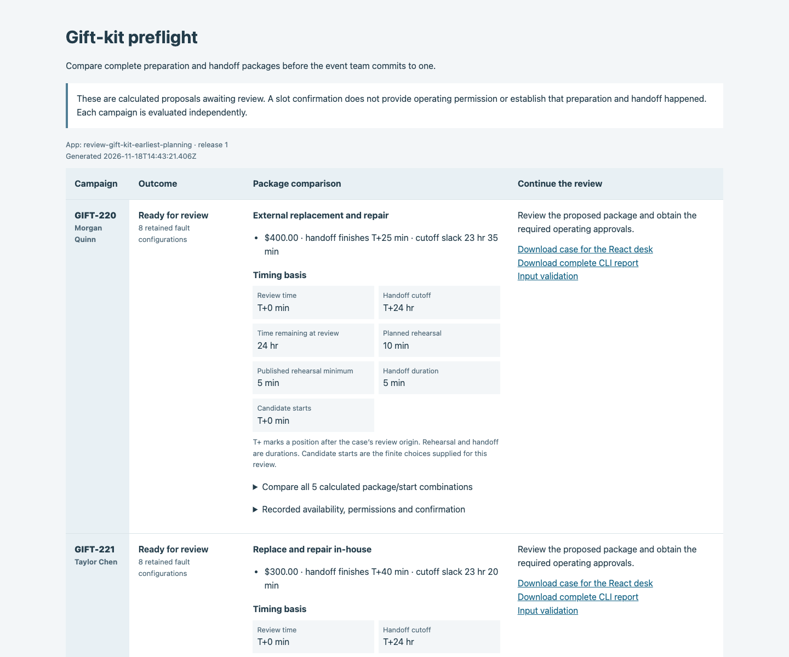
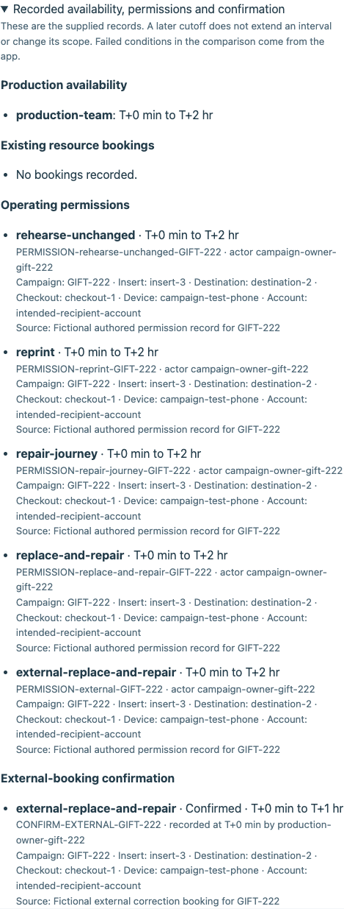

Leah is accountable for several gift-kit campaigns reaching handoff with a recipient experience that works: scan the code, reach the right destination and complete checkout. Each campaign has 120 kits, a $600 correction limit and a one-day preparation window. Marketing expects the promise kept, finance wants the expense justified, and production needs work its people and records can support.
The campaign owners have different problems. Taylor’s GIFT-221 has a supported $300 in-house option, but the earlier external package has a confirmation for an old insert revision. Riley’s GIFT-222 has time remaining before cutoff, yet its production availability, permissions and confirmation have already expired. Treating both as simply “needs a check” leaves Leah without a useful next step.
The developer needs to turn the existing gift-kit review into a working campaign list. Leah could review cases one at a time; the company could maintain a workbook or its own batch program; or the developer could reuse Decision Lab’s published model through the SDK or CLI. The choice is how to repeat the review, preserve its basis and put the findings into the team’s process.
This fictional case follows that choice through Gift-kit Preflight: a company script around the Decision Lab CLI, producing a report Leah can discuss with the owners and complete cases they can carry into individual follow-up.
What would the team otherwise build?
The developer can reuse the existing decision model or implement another assessment. Reusing it still leaves a choice of interface: interactive review, direct SDK integration or the CLI’s command and file contract.
| Approach | Where it can fit | Responsibility for campaign screening |
|---|---|---|
| Review each case interactively | A small set of cases needing close human inspection. | The existing app can supply the same reasoning. People still open each case, inspect its result and bring the findings into the working list. |
| Workbook or custom assessment program | A team-owned calculation tailored to its process. | Model package feasibility and preference, preserve revision and timing scope, distinguish input problems from calculated findings, and retain the supporting results. |
| Call the SDK directly | A service or application needing direct control of evaluation and results. | Reuse the published model while handling SDK execution, case loading and report integration in the application. |
| Script around the Decision Lab CLI | An existing review that should fit a command-and-file processing flow. | Use the CLI’s app, case-validation and assessment commands and their native outputs. The company script supplies the campaign loop, file handling, diagnostics collection and readable report. |
For this integration, the developer chooses the CLI. The gift-kit model already exists; the team needs repeated assessments and portable files behind its report rows. The script can pass complete cases to the same pinned review and retain its outputs without implementing the package requirements and ranking again.
A shared workbook, custom module or direct SDK integration can also provide consistent results when designed to do so. The CLI is useful here because its argument, output-file and exit-status contract fits the company’s scripted review. The surrounding script explicitly supplies the batch behavior and presentation.
Bring the campaign reviews into one working list.
The first gifting article compared correction options for one campaign. The authoring follow-up showed how a stronger rehearsal requirement could be introduced. This developer example connects repeated reviews to the team’s operating process.
- Campaign ownersSupply complete cases.Retain the current configuration, quotes, fault possibilities, resources and supporting records.
- CLI and company scriptScreen the campaigns.Assess each case with the same fixed app and show the proposed packages and failed conditions.
- Leah and the case ownerResolve one exception.Carry the case into the handoff desk, update supported records and reassess.
The script supplies file handling, repeated execution and the report format. The pinned app supplies the requirements and preference: earliest feasible handoff, then lower complete cost.
These connected client examples use a ten-minute planned rehearsal and a published five-minute minimum. Planning ten minutes is a case choice that already satisfies that minimum. The earlier ten-minute-minimum authoring exercise is a separate app adaptation.
A one-day cutoff. Four different recorded situations.
Each campaign has 120 kits and a $600 budget. A complete correction package includes the correction work, fresh rehearsal and final handoff. The one-day cases plan ten minutes of rehearsal and five minutes of handoff.
All four retain the eight combinations of three possible faults: unreadable print, wrong destination and checkout failure. The review checks the packages against that supplied set; it does not diagnose which fault actually occurred or remove an inconvenient possibility.
| Campaign | Recorded situation | Calculated finding | Leah’s next review |
|---|---|---|---|
| GIFT-220 | Review and start at T+0; current external booking. | External replacement and repair: $400, finish T+25 min. | Review the earlier-handoff proposal with the owner. |
| GIFT-221 | Current insert revision 4 and permissions; external booking still names revision 3. | In-house replacement and repair: $300, finish T+40 min. | Review in-house work or obtain a current external confirmation. |
| GIFT-222 | Review and start at T+23 hr; availability and permissions ended at T+2 hr, booking at T+1 hr. | No package meets the requirements. | Obtain actual supporting records for the later work or revise the plan. |
| GIFT-223 | Review and start at T+23 hr; separately supplied permissions, production availability and confirmation cover the late interval. | External replacement and repair: $400, finish T+23 hr 25 min; 35 min before cutoff. | Review the proposal and the records supporting that later interval. |
A longer deadline does not renew a permission or booking. GIFT-220 can finish while its short-lived records still apply. GIFT-222 cannot use those early intervals at T+23 hr. GIFT-223 has separately authored fictional records for that later interval; the deadline did not create them.


“Ready for review” means a complete package passes the recorded requirements. It does not mean that the case is approved. GIFT-221 still deserves attention even though an in-house proposal is available: the external option is blocked by its old insert scope.
Keep the whole case behind each row.
The input manifest names the campaigns, their owners and complete native case files. For Taylor’s GIFT-221, the selected entry points to the one-day case with the older confirmation:
{
"id": "GIFT-221",
"owner": "Taylor Chen",
"case": "cases/one-day-stale.json"
},Each case includes the review time, finite candidate starts, quotes, retained fault scenarios, calendars, permissions and confirmation records. It is a complete snapshot, rather than a set of partial updates. The script does not merge events or renew record scope.
It checks that the campaign ID, case ID and batch ID agree, then copies the matching case without changing its faults, permissions or confirmation:
// Copy the complete native case without changing faults, permissions, or
// evidence scopes. An old confirmation must remain old until replaced by
// a genuinely new source record; changing a revision is not a repair.
row.basis = reviewBasis(inputs);
row.case = `campaigns/${campaign.id}/case.json`;
const caseFile = path.join(stage, row.case);
await writeFile(caseFile, json(inputs));For GIFT-221, revision 4 stays on the current campaign and permissions, while revision 3 stays on the old external confirmation. Preserving that distinction makes the blocker visible to Leah.
Apply the same review to each campaign.
The script first opens the fixed app through the CLI and checks its release identity. For each readable case, it calls native case validation. Invalid inputs retain their diagnostics and do not proceed as if they had a calculated proposal:
const validationFile = path.join(directory, 'validation.json');
const validated = await invoke(['case', 'validate', '--app', appFile, '--case', caseFile, '--output', validationFile], commands);
const validation = await optionalJSON(validationFile);
if (validation) row.validation = `campaigns/${campaign.id}/validation.json`;
if (validated.exitCode || validation?.valid !== true) {
row.status = validated.exitCode === 4 ? 'unavailable' : 'input-error';
row.failureCode = validated.exitCode === 4 ? 4 : 2;
row.messages = messages(validated, validation);
continue;
}Valid cases reach the public CLI assessment with the complete report requested:
const runFile = path.join(directory, 'run.json');
const args = ['run', '--app', appFile, '--case', caseFile, '--reports', 'all', '--locale', 'en-US',
'--timeout-ms', String(timeoutMs), '--max-output-bytes', '50000000',
'--run-id', `gift-preflight-${campaign.id}`, '--output', runFile];
if (maxPlans !== undefined) args.push('--max-plans', String(maxPlans));
const evaluated = await invoke(args, commands);The surrounding invoke helper calls runCLI from @decision-lab/cli and retains its arguments, exit code and diagnostics. This is the public command handler used by the CLI, invoked directly by the Node.js script. The command contract identifies the app and case files, requests complete reports and names the output artifact. Package feasibility, confirmation coverage and preference come from the published app.
A complete result with no feasible package is a business finding. Invalid inputs and an incomplete or unavailable assessment require different responses. The reporting code keeps those outcomes distinct:
// Exit zero can mean a completed assessment with no feasible package.
// Conversely, a partial search must not become a recommendation simply
// because it happened to retain one attractive candidate.
if (evaluated.exitCode || !row.review?.available) {
row.status = evaluated.exitCode === 2 ? 'input-error' : 'unavailable';
row.failureCode = evaluated.exitCode === 4 ? 4 : evaluated.exitCode === 2 ? 2 : 3;
row.messages.push(...(row.review?.issues?.length ? row.review.issues : messages(evaluated)));
} else {
row.status = row.review.status;
}The four one-day inputs are valid, including the deliberately blocked GIFT-222. The repository also retains a separate original case with a missing budget to demonstrate input validation. It receives diagnostics rather than a fabricated successful run.
Make the time basis visible.
The report distinguishes a position on the case clock from a duration. T+24 hr is the cutoff position, measured from the fixed origin. 10 min is the planned rehearsal duration. Opening the report does not restart that day or move its recorded review time.
For each proposal, Leah can inspect its start, finish and time before cutoff. Positive slack is useful, but GIFT-222 shows why it is insufficient: a package can finish before the deadline and still fail its permission or availability requirements.
The planner compares the supplied candidate start positions. It does not search every minute of the day. Changing the review time while leaving the only candidate at T+0 makes that candidate a past start; a new review needs the intended start positions recorded too.
The report’s Recorded availability, permissions and confirmation disclosure exposes the intervals and scope behind a row. The company’s report reads the app’s findings and presents the records for review.


Pass one case to the person resolving it.
The developer renders a standalone HTML report alongside the manifest and native artifacts:
await writeFile(path.join(stage, 'manifest.json'), json(manifest));
await writeFile(path.join(stage, 'campaigns.html'), renderHTML(manifest));The current campaign queue and package tables use the shared RecordsView component from @decision-lab/react-views, rendered to standalone HTML with React DOM. The company adapter supplies the columns and links:
const records = (id, columns, rows, renderValue) => h(RecordsView, {
view: { format: 'record-view/1', id, columns: columns.map(([key, label]) => ({ key, label })), rows }, renderValue,
});This is presentation of retained findings. Rendering the report does not run the decision model, change a permission or merge away a blocked campaign. The complete native run and every requested report context remain available separately.
The report’s Download case for the React desk link retains the complete canonical inputs behind that campaign. Its calculation and validation are available separately. Missing or unreadable cases cannot supply a usable handoff; an exported invalid case still needs its source corrected.
For Leah, the useful next step is GIFT-221. Taylor has a current in-house proposal, and a new external confirmation could change it. The exported case gives the handoff desk the same configuration, fault possibilities and supporting records that produced the report row.
The Gift-kit Preflight repository directory contains the complete application, both scenario manifests, case inputs, pinned app and tests. Core excerpts retain their public source reference; the current client source snapshot includes the shared report renderer shown here.
A working list Leah can put back in the owners’ hands.
Leah can now separate the work. Morgan’s GIFT-220 has a supported external proposal to review. Taylor’s GIFT-221 has a valid in-house option and a specific external-confirmation mismatch to resolve. Riley’s GIFT-222 needs records that actually cover the later work or a revised plan. Devon’s GIFT-223 already supplies its own late records and supports the $400 external package with 35 minutes before cutoff.
The developer’s choice produces a concrete handoff too. The company script builds the working list while the CLI applies the existing app’s requirements and preference. Each calculated row retains its native inputs and result; an input or assessment problem remains a separate finding. The developer maintains the company’s file mappings and report format around that shared review.
Taylor can carry GIFT-221’s complete case into the SDK handoff desk, preserving the basis for its current $300, T+40 min proposal while a new confirmation is obtained. Leah can take the supported proposals to production and finance for review. She has an owner and a concrete next action for each campaign, with the supporting case available when the conversation moves from screening to a decision.